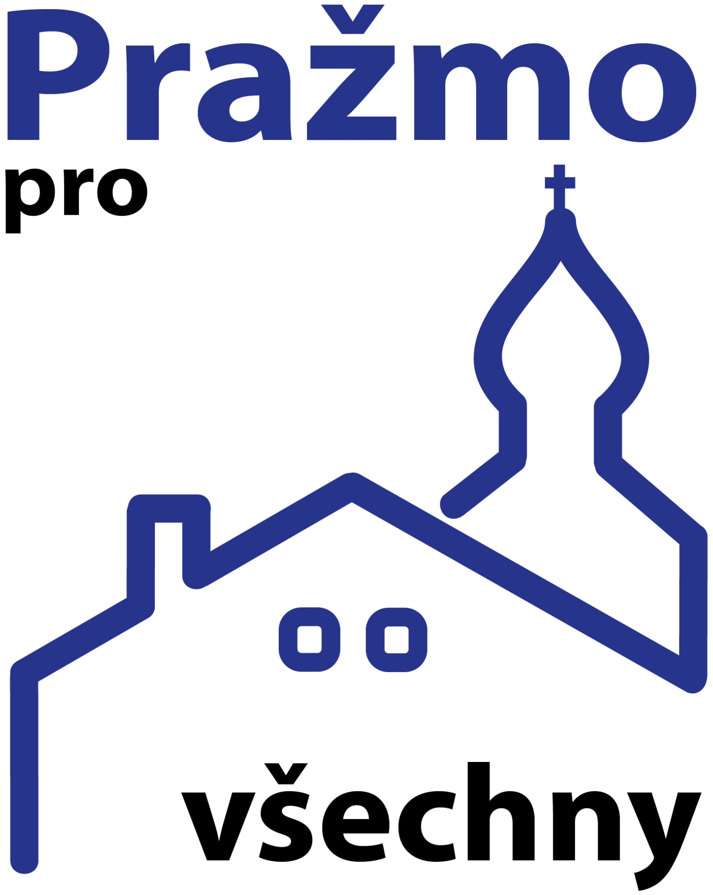

07 · Aktuální logo
Dům, který žije
Používám aktuální dodaný návrh logo_3. Pro web je technicky oříznutý a převedený na průhledné pozadí, symbol domu je použitý v hlavičce a celý znak zůstává k dispozici pro větší formáty.
Původní návrh přináší výrazný motiv domu, očí, úsměvu a vrcholu s křížem. Níže je zachovaný jako hlavní východisko a doplněný o další možné směry zpracování.

Používám aktuální dodaný návrh logo_3. Pro web je technicky oříznutý a převedený na průhledné pozadí, symbol domu je použitý v hlavičce a celý znak zůstává k dispozici pro větší formáty.
Výrazné, jednoduché a dobře čitelné logo pro plakáty i profilové obrázky.
Motiv krajiny a kopců připomíná místní prostředí, růst a dlouhodobý směr obce.
Komunikační a přátelská varianta. Zdůrazňuje naslouchání, dialog a zapojení občanů.
Pečeť působí důvěryhodně a komunitně. Vhodná pro dokumenty, samolepky a obecní akce.
Symbol tří priorit: otevřenost, odpovědnost a život v obci. Moderní a snadno animovatelná značka.
Návrhy jsou koncepční směry pro výběr. Po zvolení varianty lze připravit finální SVG, černobílou verzi, favicon, profilovou ikonu a tiskové podklady. Originální podklad je uložen v assets/logo-1.png.